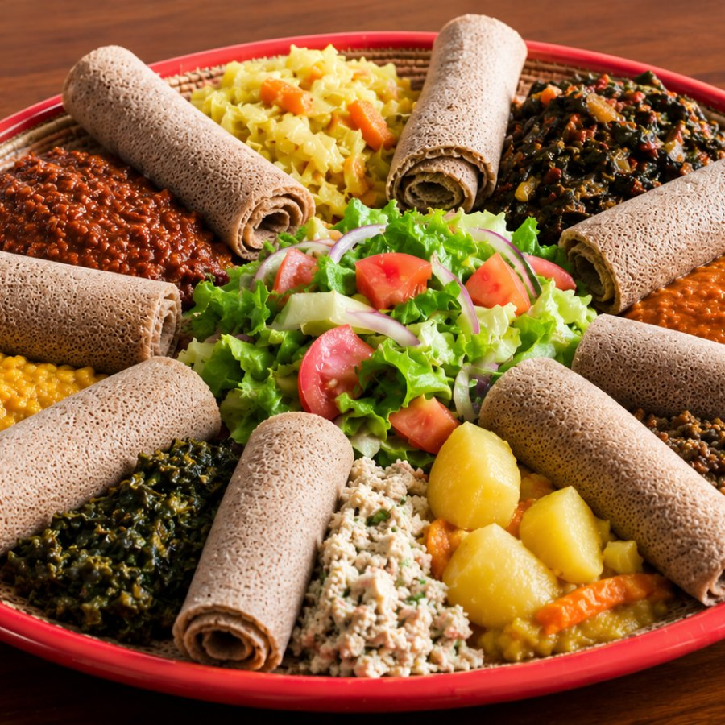

Veggie Special Combo
$29.75A full beyaynetu platter: shiro, misir wot, collard greens, cabbage and salad over injera.
Order this dish→A whole platter of lentils, greens and spiced vegetables over injera. No meat, no dairy, no butter, made the traditional fasting way and served every day of the year.

Each mound is cooked in its own pot, then spooned onto a single round of injera. You tear the bread and scoop, no fork required.
Tap a number on the plate to see what it is
One beyaynetu is all ten of these together. The number on the plate matches the number on the card.
The lineup rotates with the season and what's fresh that morning.
Approximate, for one side portion (about ½ cup) as it comes on the platter.
Tap any photo to see it up close.
We're adding more plant-based plates to the menu shortly. Until then, ask about extra vegetable sides when you order, gomen, atkilt and kik alicha are often available fresh.
Our vegan pots are built on plant oil and berbere, never niter kibbeh. Nothing is swapped in to imitate meat.
These are the dishes Eritrean and Ethiopian families cook during Tsom, refined over generations of plant-based eating.
One platter feeds two or three. Everything arrives on injera, torn and eaten by hand, family-style.

During Tsom, the fasting season observed before Orthodox Christian holidays like Lent and Christmas, Eritrean and Ethiopian households eat entirely plant-based for weeks at a time. That tradition shaped some of the richest vegan cooking in the world: hearty lentils, spiced chickpeas, collard greens, and berbere-stewed vegetables, all built to be satisfying without meat or dairy.
At Banna, we don't save that cooking for fasting season. Our vegan dishes are on the menu 365 days a year, made the same slow, traditional way, so anyone eating plant-based can order a full, flavorful platter any day of the week.
Dine in, pick up, or have it delivered. Order directly for the full menu, or through your favorite delivery app.